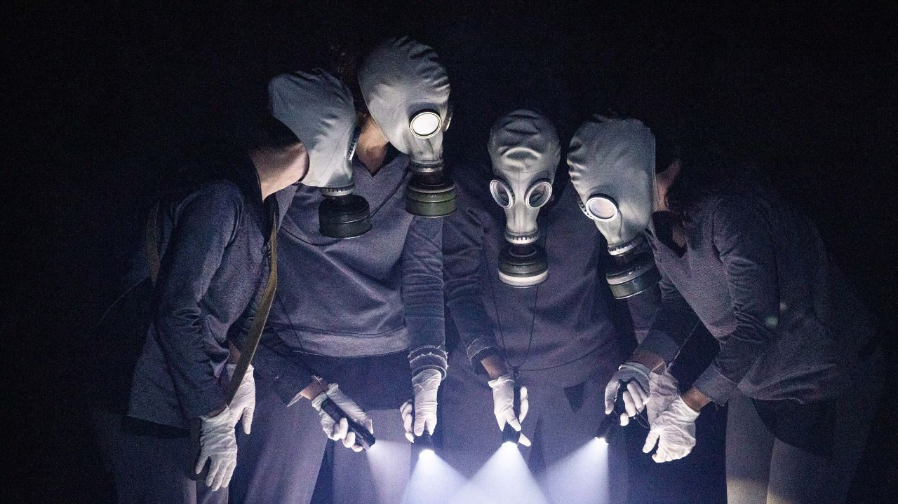

“Chernobyl” volta aos palcos em São Paulo no Teatro Estúdio a partir de 1º de abril

Com direção de Bruno Perillo e elenco formado por Carolina Haddad, Joana Dória, Manuela Afonso e Nicole Cordery, espetáculo revisita a tragédia nuclear de 1986 a partir do olhar de uma boneca
Indicado ao Prêmio APCA por Melhor Direção, o espetáculo “Chernobyl” volta aos palcos paulistanos em 1º de abril, no Teatro Estúdio, onde segue em cartaz até 7 de maio, com sessões às quartas e quintas, às 20h.
Com dramaturgia de Florence Valéro e direção de Bruno Perillo, a montagem retoma o desastre nuclear de 1986 para refletir sobre trauma, exílio e as consequências humanas de uma catástrofe que ultrapassou fronteiras.
A peça parte do ponto de vista de Antonia, uma boneca que testemunha o sofrimento de sua “família” — a menina Hanna, o irmão Michael, a mãe Elena e o pai Igor — diante dos efeitos devastadores da radiação. Ao escolher uma perspectiva fabular para abordar um episódio histórico real, o texto desloca o horror da escala geopolítica para o espaço íntimo de uma casa e de seus vínculos rompidos.
Escrito em 2017 pela dramaturga francesa Florence Valéro, nascida no mesmo ano do acidente, o texto procura se afastar do naturalismo para dar forma cênica à experiência do desenraizamento. A autora imagina uma narrativa atravessada por vestígios, fantasmas e memórias, em que a figura da boneca abandonada se transforma em porta-voz de uma devastação histórica e emocional.
Na encenação, as quatro atrizes em cena se revezam entre nove personagens, sem mudanças de figurino ou caracterização. O cenário e os figurinos, assinados por Chris Aizner, apostam em elementos neutros, cadeiras e grandes caixas brancas que se reorganizam para compor diferentes ambientes, enquanto luz, vídeo e sombras ajudam a desenhar os espaços da ação.
Segundo Bruno Perillo, a montagem aproxima o macro e o micro: de um lado, o desastre de Chernobyl como acontecimento histórico de dimensão monumental; de outro, a lenta dissolução do destino de uma família. A peça, assim, transforma um evento de repercussão mundial em experiência cênica de forte intimidade e tensão.
Sinopse
A peça conta a história da boneca Antonia, que testemunha o sofrimento de sua “família” — a menina Hanna, seu irmão Michael, a mãe Elena e o pai Igor — diante dos efeitos devastadores de um dos maiores desastres nucleares da história.
Histórico da montagem
“Chernobyl” estreou em 2019, no Sesc Consolação, e depois passou por espaços como a Oficina Cultural Oswald de Andrade e o Teatro Aliança Francesa, além de circular por cidades do estado de São Paulo. Ao longo de sua trajetória, recebeu indicação ao APCA por Melhor Direção e a categorias do Prêmio Aplauso Brasil, incluindo direção, iluminação, figurino, espetáculo independente e elenco.
Serviço
Chernobyl
Estreia: 1º de abril de 2026
Temporada: até 7 de maio de 2026
Sessões: quartas e quintas, às 20h
Local: Teatro Estúdio
Endereço: Rua Conselheiro Nébias, 891, Campos Elíseos, São Paulo
Ingressos: R$ 80 (inteira) e R$ 40 (meia)
Vendas: online pelo Sympla ou na bilheteria a partir de 3 horas antes do espetáculo
Capacidade: 113 lugares
Duração: 90 minutos
Classificação indicativa: 14 anos
Acessibilidade: sim.